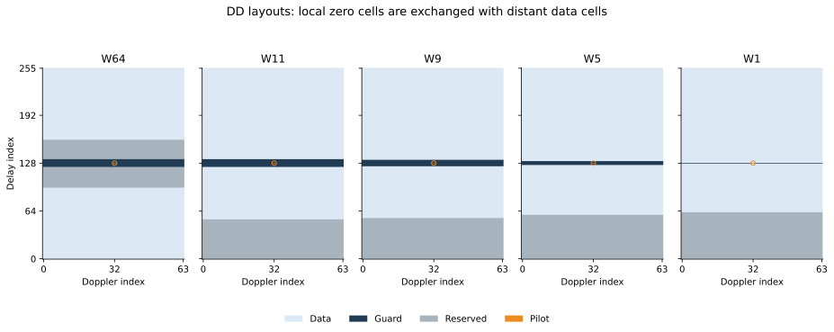
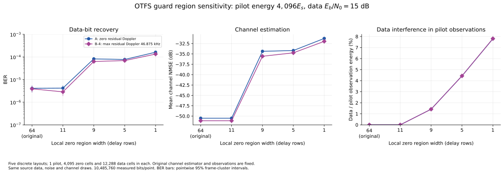

pilot energy=4,096 Es, data Eb/N0=15 dB, A·B-4에서 local zero region width만 64·11·9·5·1 delay rows로 바꿨다. Doppler 방향은 모든 64 bins를 유지했다. 가까운 zero cells를 data로 바꾼 만큼 delay rows 0~62 범위에 reserved cells를 두었다. 모든 layout은 pilot 1개, zero cells 4,095개, data cells 12,288개다.
공통 data cells의 symbol은 그대로 두고, 새 reserved cells에서 밀려난 data만 새로 열린 cells로 옮겼다. 복원 후 원래 information-bit 순서로 되돌려 집계했다. 같은 data·channel·noise·calibration을 사용했고, useful energy, CP energy와 sampled peak도 불변인지 검사했다. sampled peak는 continuous-time/RF peak 검증을 뜻하지 않는다.
channel estimator는 원래 W64의 pilot-only model, observation region, public bounds와 search를 고정했다. W9·W5·W1은 data isolation 가정을 의도적으로 완화한 ablation이다. unknown-data interference를 수신기에서 정답 data로 제거하지 않았다. actual transmit mask는 MMSE data embedding과 known-pilot subtraction에 정확히 반영했다.
각 점 10,485,760 bits, 214 frames다. W64는 기존 결과를 frame별로 재현했다. data/pilot 성분 분리와 true channel 비교는 leakage·NMSE 평가에만 사용했다.
W64→W11에서 B-4 channel NMSE는 -51.116→-51.116 dB로 같았고, pilot observations와 estimated taps도 numerical precision 수준에서 일치했다. 현재 model에서 extra reserved cells를 pilot 근처에 두는 것이 channel estimation을 더 정확하게 만든 것은 아니다.
W11→W9에서는 data/pilot observation energy ratio가 numerical zero에서 1.417%로 증가했고, channel NMSE는 -51.116→-35.569 dB, BER은 2.86102e-06→6.30379e-05로 악화됐다. 고정한 receiver에서 pilot observation의 data isolation이 channel estimation에 기여한다는 근거다.
W64/W11의 B-4 errors는 41/30개였다. channel estimate가 같으므로 이 작은 BER 차이를 W11의 channel estimation 우위로 해석하지 않는다. data placement·detection 구조와 finite sampling의 영향이 남아 있다. W1도 pilot row의 63 zero cells를 유지하므로 완전한 no-guard case는 아니다.


| Condition | Local width (rows) | Errors / bits | BER | 95% frame interval | Channel NMSE (dB) | Data / pilot observation energy (%) | Delay-set match |
|---|---|---|---|---|---|---|---|
| A | 64 | 43 / 10,485,760 | 4.1008e-06 | [2.7199e-06, 5.4817e-06] Error-bearing frames 35/214 | -50.510 | Numerical zero | 214/214 |
| A | 11 | 44 / 10,485,760 | 4.19617e-06 | [2.8333e-06, 5.559e-06] Error-bearing frames 36/214 | -50.510 | Numerical zero | 214/214 |
| A | 9 | 861 / 10,485,760 | 8.21114e-05 | [7.4668e-05, 8.9555e-05] Error-bearing frames 202/214 | -34.373 | 1.4172 | 214/214 |
| A | 5 | 810 / 10,485,760 | 7.72476e-05 | [7.1053e-05, 8.3443e-05] Error-bearing frames 204/214 | -34.184 | 4.4329 | 214/214 |
| A | 1 | 1,697 / 10,485,760 | 0.000161839 | [0.00015123, 0.00017245] Error-bearing frames 213/214 | -31.266 | 7.7933 | 214/214 |
| B-4 | 64 | 41 / 10,485,760 | 3.91006e-06 | [2.7088e-06, 5.1114e-06] Error-bearing frames 37/214 | -51.116 | Numerical zero | 214/214 |
| B-4 | 11 | 30 / 10,485,760 | 2.86102e-06 | [1.8736e-06, 3.8485e-06] Error-bearing frames 29/214 | -51.116 | Numerical zero | 214/214 |
| B-4 | 9 | 661 / 10,485,760 | 6.30379e-05 | [5.7922e-05, 6.8154e-05] Error-bearing frames 209/214 | -35.569 | 1.4172 | 214/214 |
| B-4 | 5 | 725 / 10,485,760 | 6.91414e-05 | [6.344e-05, 7.4843e-05] Error-bearing frames 207/214 | -34.739 | 4.4326 | 214/214 |
| B-4 | 1 | 1,405 / 10,485,760 | 0.000133991 | [0.00012512, 0.00014286] Error-bearing frames 214/214 | -31.964 | 7.8093 | 214/214 |
NMSE와 energy ratio는 frame별 linear ratio를 평균한 뒤 필요시 dB로 변환했다. BER interval은 기존 approximate CR1 frame-cluster 방식이며 동시 confidence band는 아니다. Data placement도 바뀌므로 BER 변화 전체를 channel estimation loss로만 해석하지 않는다. 이 실험은 fixed receiver의 sensitivity이며 optimized reduced-guard receiver의 한계 성능이나 physical edge guard band의 효과를 뜻하지 않는다.